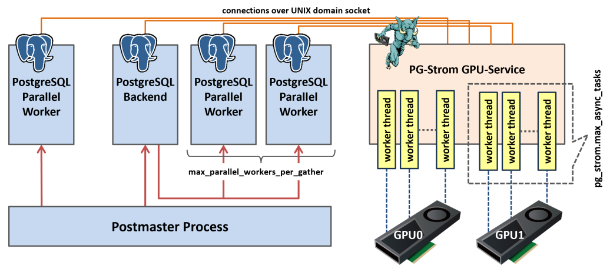

基本的な操作
GPUオフロードの確認
クエリがGPUで実行されるかどうかを確認するにはEXPLAINコマンドを使用します。
SQL処理は内部的にいくつかの要素に分解され処理されますが、PG-StromがGPUを適用して並列処理を行うのはSCAN、JOIN、GROUP BYの各ワークロードです。標準でPostgreSQLが提供している各処理の代わりに、GpuScan、GpuJoin、GpuPreAggが表示された場合、そのクエリはGPUによって処理される事となります。
以下はEXPLAINコマンドの実行例です。
=# explain
select sum(lo_revenue), d_year, p_brand1
from lineorder, date1, part, supplier
where lo_orderdate = d_datekey
and lo_partkey = p_partkey
and lo_suppkey = s_suppkey
and p_brand1 between 'MFGR#2221' and 'MFGR#2228'
and s_region = 'ASIA'
group by d_year, p_brand1;
QUERY PLAN
-------------------------------------------------------------------------------------------------
HashAggregate (cost=2924539.01..2924612.42 rows=5873 width=46)
Group Key: date1.d_year, part.p_brand1
-> Custom Scan (GpuPreAgg) on lineorder (cost=2924421.55..2924494.96 rows=5873 width=46)
GPU Projection: pgstrom.psum(lo_revenue), d_year, p_brand1
GPU Join Quals [1]: (lo_partkey = p_partkey) [plan: 600046000 -> 783060 ]
GPU Outer Hash [1]: lo_partkey
GPU Inner Hash [1]: p_partkey
GPU Join Quals [2]: (lo_suppkey = s_suppkey) [plan: 783060 -> 157695 ]
GPU Outer Hash [2]: lo_suppkey
GPU Inner Hash [2]: s_suppkey
GPU Join Quals [3]: (lo_orderdate = d_datekey) [plan: 157695 -> 157695 ]
GPU Outer Hash [3]: lo_orderdate
GPU Inner Hash [3]: d_datekey
GPU Group Key: d_year, p_brand1
Scan-Engine: GPU-Direct with 2 GPUs <0,1>
-> Seq Scan on part (cost=0.00..41481.00 rows=1827 width=14)
Filter: ((p_brand1 >= 'MFGR#2221'::bpchar) AND (p_brand1 <= 'MFGR#2228'::bpchar))
-> Custom Scan (GpuScan) on supplier (cost=100.00..19001.67 rows=203767 width=6)
GPU Projection: s_suppkey
GPU Scan Quals: (s_region = 'ASIA'::bpchar) [plan: 1000000 -> 203767]
Scan-Engine: GPU-Direct with 2 GPUs <0,1>
-> Seq Scan on date1 (cost=0.00..72.56 rows=2556 width=8)
(22 rows)
実行計画の中に見慣れない処理が含まれている事に気が付かれたでしょう。
CustomScan機構を用いてGpuJoinおよびGpuPreAggが実装されています。ここでGpuJoinはlineorderとdate1、partおよびsupplierとのJOIN処理を実行し、その結果を受け取るGpuPreAggは列d_yearとp_brand1によるGROUP BY処理をGPUで実行します。
PostgreSQLがクエリ実行計画を構築する過程でPG-Stromはオプティマイザに介入し、SCAN、JOIN、GROUP BYの各ワークロードをGPUで実行可能である場合、そのコストを算出してPostgreSQLのオプティマイザに実行計画の候補を提示します。 推定されたコスト値がCPUで実行する他の実行計画よりも小さな値である場合、GPUを用いた代替の実行計画が採用される事になります。
ワークロードをGPUで実行するためには、少なくとも演算式または関数、および使用されているデータ型がPG-Stromでサポートされている必要があります。
intやfloatといった数値型、dateやtimestampといった日付時刻型、textのような文字列型がサポートされており、また、四則演算や大小比較といった数多くのビルトイン演算子がサポートされています。
詳細な一覧に関してはリファレンスを参照してください。
PG-Stromの有効化/無効化
PG-Stromはユーザから与えられたSQLを解析し、それがGPUで実行できる場合には、WHERE句やJOIN検索条件に該当する命令コードを生成して透過的にGPUで実行します。
これらのプロセスは自動的に行われますが、以下のコマンドによって明示的にPG-Stromを無効化し、オリジナルのPostgreSQLと同じように動作させる事もできます。
=# set pg_strom.enabled = off;
SET
これ以外にも、以下のパラメータを用いて個別の機能単位で有効/無効を切り替える事ができます。
pg_strom.enable_gpuscanpg_strom.enable_gpujoinpg_strom.enable_gpuhashjoinpg_strom.enable_gpugistindexpg_strom.enable_gpupreaggpg_strom.enable_gpusortpg_strom.enable_brinpg_strom.enable_partitionwise_gpujoinpg_strom.enable_partitionwise_gpupreagg
CPU+GPUハイブリッド並列
PG-StromはPostgreSQLのCPU並列実行に対応しています。
PostgreSQLのCPU並列実行は、Gatherノードがいくつかのバックグラウンドワーカプロセスを起動し、各バックグラウンドワーカが"部分的に"実行したクエリの結果を後で結合する形で実装されています。 GpuJoinやGpuPreAggといったPG-Stromの処理はバックグラウンドワーカ側での実行に対応しており、個々のプロセスが互いにGPUを使用して処理を進めます。通常、GPUへデータを供給するために個々のCPUコアがバッファをセットアップするための処理速度は、GPUでのSQLワークロードの処理速度に比べてずっと遅いため、CPU並列とGPU並列をハイブリッドで利用する事で処理速度の向上が期待できます。 ただし、GPUを利用するためにはバックグラウンドで動作するPG-Strom GPU Serviceに接続してセッション毎の初期化が必要になりますので、常にCPU並列度が高ければ良いというわけではありません。
以下の実行計画を見てください。
Gather以下の実行計画はバックグラウンドワーカーが実行可能なものです。6億行を保持するlineorderテーブルを2プロセスのバックグラウンドワーカとコーディネータプロセスでスキャンするため、プロセスあたり約2億行をGpuPreAggで処理し、その結果をGatherおよびHashAggregateノードで結合します。
=# explain
select sum(lo_revenue), d_year, p_brand1
from lineorder, date1, part, supplier
where lo_orderdate = d_datekey
and lo_partkey = p_partkey
and lo_suppkey = s_suppkey
and p_brand1 between
'MFGR#2221' and 'MFGR#2228'
and s_region = 'ASIA'
group by d_year, p_brand1;
QUERY PLAN
-------------------------------------------------------------------------------------------------------------
HashAggregate (cost=1265644.05..1265717.46 rows=5873 width=46)
Group Key: date1.d_year, part.p_brand1
-> Gather (cost=1264982.11..1265600.00 rows=5873 width=46)
Workers Planned: 2
-> Parallel Custom Scan (GpuPreAgg) on lineorder (cost=1263982.11..1264012.70 rows=5873 width=46)
GPU Projection: pgstrom.psum(lo_revenue), d_year, p_brand1
GPU Join Quals [1]: (lo_partkey = p_partkey) [plan: 250019100 -> 326275 ]
GPU Outer Hash [1]: lo_partkey
GPU Inner Hash [1]: p_partkey
GPU Join Quals [2]: (lo_suppkey = s_suppkey) [plan: 326275 -> 65706 ]
GPU Outer Hash [2]: lo_suppkey
GPU Inner Hash [2]: s_suppkey
GPU Join Quals [3]: (lo_orderdate = d_datekey) [plan: 65706 -> 65706 ]
GPU Outer Hash [3]: lo_orderdate
GPU Inner Hash [3]: d_datekey
GPU Group Key: d_year, p_brand1
Scan-Engine: GPU-Direct with 2 GPUs <0,1>
-> Parallel Seq Scan on part (cost=0.00..29231.00 rows=761 width=14)
Filter: ((p_brand1 >= 'MFGR#2221'::bpchar) AND (p_brand1 <= 'MFGR#2228'::bpchar))
-> Parallel Custom Scan (GpuScan) on supplier (cost=100.00..8002.40 rows=84903 width=6)
GPU Projection: s_suppkey
GPU Scan Quals: (s_region = 'ASIA'::bpchar) [plan: 1000000 -> 84903]
Scan-Engine: GPU-Direct with 2 GPUs <0,1>
-> Parallel Seq Scan on date1 (cost=0.00..62.04 rows=1504 width=8)
(24 rows)
並列度の指定
PostgreSQLにおける並列度とは、あるクエリを実行するために複数のワーカープロセスを用いて並列動作する時のプロセス数です。これは実行計画の上ではGatherノードが起動するプロセス数で、主にmax_parallel_workers_per_gatherパラメータによって制御する事ができます。
PG-Stromにおいても、並列ワーカープロセスの存在は重要です。たとえストレージからのデータ読み出しの大半はGPU-Direct SQL機構によって行われるためCPUの負荷は大きくないとはいえ、読み出すべきブロックの可視性をチェックしたり、ダーティなバッファの内容をコピーするのはCPUの仕事です。
加えて、PG-Stromにはもう一つ処理の並列度を考慮すべきポイントが存在します。それは、GPU-Serviceにおけるワーカースレッドの数です。

上記の図は、PG-Stromのアーキテクチャを模式的に表したものです。
クライアントがPostgreSQLに接続すると、各プロセスを統括するpostmasterプロセスは、接続ごとにPostgreSQL Backendプロセスを起動します。このプロセスがクライアントからのSQLを受け取り、場合によってはParallel Workerプロセスの手助けを借りながら、実行計画に基づいてクエリを実行していきます。
クエリの実行にPG-Stromを用いる場合、これらのプロセスはUNIXドメインソケットを介して常駐プロセスであるPG-Strom GPU Serviceへコネクションを開きます。そして、実行すべき命令コードと、読み出すべきストレージの情報（おおむね64MBのチャン単位）をペアにしてリクエストを次々と送出します。 PG-Strom GPU Serviceはマルチスレッド化されており、各ワーカースレッドはこれらのリクエストを受け取ると次々と実行に移していきます。典型的なリクエストの処理は、ストレージの読み出し、GPU Kernelの起動、処理結果の回収と応答リクエストの送出、という流れになっています。 これらの処理は容易に多重化できるため、例えば、スレッドAがストレージからの読み出しを待機している間にも、スレッドBがGPU Kernelを実行するなど、リソースを遊ばせないために十分な数のスレッドを立ち上げておく事が必要です。
このワーカースレッドの数を変更するには、pg_strom.max_async_tasksパラメータを使用します。
GPU 1台につき、このパラメータで指定した数のスレッドが起動してPostgreSQLバックエンド/ワーカープロセスからのリクエストを待ち受けます。
=# SET pg_strom.max_async_tasks = 24;
SET
このパラメータの設定は即座に反映され、例えばデフォルトである16から24に増やした場合、各GPUごとに8個のワーカースレッドを追加で起動します。数秒後には以下のようなログが出力されるでしょう。
LOG: GPU0 workers - 8 startup, 0 terminate
LOG: GPU1 workers - 8 startup, 0 terminate
下位プランの統合
PG-StromはSCAN、JOIN、GROUP BY、SORTの各処理をGPUで実行する事が可能ですが、これに対応するPostgreSQL標準の処理を単純に置き換えただけでは困った事態が発生します。 SCANが終わった後のデータをいったんホスト側のバッファに書き戻し、次にそれをJOINするために再びGPUへとコピーし、さらにGROUP BYを実行する前に再びホスト側のバッファに書き戻し・・・といった形で、CPUとGPUの間でデータのピンポンが発生してしまいます。
CPUのメモリ上でデータ（行）を交換するのと比較して、CPUとGPUの間はPCI-Eバスで結ばれているため、どうしてもデータ転送には大きなコストが発生してしまいます。これを避けるには、SCAN、JOIN、GROUP BY、SORTといった一連のGPU対応タスクが連続して実行可能である場合には、できる限りGPUメモリ上でデータ交換を行い、CPUへデータを書き戻すのは最小限に留めるべきであるという事です。

以下の実行計画は、SCAN、JOIN、GROUP BYの複合ワークロードをPostgreSQLで実行する場合のものです。
最もサイズの大きなlineorderテーブルを軸に、part、supplier、date1の各テーブルをHashJoinを用いて結合し、最後に集計処理を行うAggregateが登場している事が分かります。
=# explain
select sum(lo_revenue), d_year, p_brand1
from lineorder, date1, part, supplier
where lo_orderdate = d_datekey
and lo_partkey = p_partkey
and lo_suppkey = s_suppkey
and p_brand1 between
'MFGR#2221' and 'MFGR#2228'
and s_region = 'ASIA'
group by d_year, p_brand1;
QUERY PLAN
-------------------------------------------------------------------------------------------------------------------------------
Finalize HashAggregate (cost=14892768.98..14892842.39 rows=5873 width=46)
Group Key: date1.d_year, part.p_brand1
-> Gather (cost=14891403.50..14892651.52 rows=11746 width=46)
Workers Planned: 2
-> Partial HashAggregate (cost=14890403.50..14890476.92 rows=5873 width=46)
Group Key: date1.d_year, part.p_brand1
-> Hash Join (cost=52477.64..14889910.71 rows=65706 width=20)
Hash Cond: (lineorder.lo_orderdate = date1.d_datekey)
-> Parallel Hash Join (cost=52373.13..14888902.74 rows=65706 width=20)
Hash Cond: (lineorder.lo_suppkey = supplier.s_suppkey)
-> Parallel Hash Join (cost=29240.51..14864272.81 rows=326275 width=26)
Hash Cond: (lineorder.lo_partkey = part.p_partkey)
-> Parallel Seq Scan on lineorder (cost=0.00..13896101.47 rows=250019147 width=20)
-> Parallel Hash (cost=29231.00..29231.00 rows=761 width=14)
-> Parallel Seq Scan on part (cost=0.00..29231.00 rows=761 width=14)
Filter: ((p_brand1 >= 'MFGR#2221'::bpchar) AND (p_brand1 <= 'MFGR#2228'::bpchar))
-> Parallel Hash (cost=22071.33..22071.33 rows=84903 width=6)
-> Parallel Seq Scan on supplier (cost=0.00..22071.33 rows=84903 width=6)
Filter: (s_region = 'ASIA'::bpchar)
-> Hash (cost=72.56..72.56 rows=2556 width=8)
-> Seq Scan on date1 (cost=0.00..72.56 rows=2556 width=8)
(21 rows)
一方、PG-Stromを用いた場合はずいぶんと様子が異なります。 結果の射影処理を行うResultノードの除けば、全ての処理がCustom Scan (GpuPreAgg)で実行されています。 （※なお、この実行計画では、結果を最大限にシンプルにするため、CPU並列とCPU-Fallbackは無効化しています）
しかしGPU-PreAggとはいえ、この処理はGROUP BYだけを行っている訳ではありません。
EXPLAINの出力に付随する各種のパラメータを読むと、このGPU-PreAggは最もサイズの大きなlineorderテーブルをスキャンしつつ、下位ノードでpart、supplier、date1テーブルを読み出してこれとJOIN処理を行います。そしてd_yearとp_brand1によるグループ化そ行った上で、同じキーによるソート処理を行った上で、処理結果をCPUに戻しています。
PostgreSQLにおいては、複雑なクエリはある程度多くの要素に分解され、数多くの処理ステップを含む実行計画が生成される事が多くなります。 一方、PG-Stromにおいてもこれらの要素は抜け漏れなく実行されるのですが、できる限り一個のプランに統合された形になっている方が、基本的には効率の良い実行計画であると言えます。
=# explain
select sum(lo_revenue), d_year, p_brand1
from lineorder, date1, part, supplier
where lo_orderdate = d_datekey
and lo_partkey = p_partkey
and lo_suppkey = s_suppkey
and p_brand1 between 'MFGR#2221' and 'MFGR#2228'
and s_region = 'ASIA'
group by d_year, p_brand1
order by d_year, p_brand1;
QUERY PLAN
-------------------------------------------------------------------------------------------------
Result (cost=3111326.30..3111451.10 rows=5873 width=46)
-> Custom Scan (GpuPreAgg) on lineorder (cost=3111326.30..3111363.01 rows=5873 width=46)
GPU Projection: pgstrom.psum(lo_revenue), d_year, p_brand1
GPU Join Quals [1]: (lo_partkey = p_partkey) [plan: 600046000 -> 783060 ]
GPU Outer Hash [1]: lo_partkey
GPU Inner Hash [1]: p_partkey
GPU Join Quals [2]: (lo_suppkey = s_suppkey) [plan: 783060 -> 157695 ]
GPU Outer Hash [2]: lo_suppkey
GPU Inner Hash [2]: s_suppkey
GPU Join Quals [3]: (lo_orderdate = d_datekey) [plan: 157695 -> 157695 ]
GPU Outer Hash [3]: lo_orderdate
GPU Inner Hash [3]: d_datekey
GPU Group Key: d_year, p_brand1
Scan-Engine: GPU-Direct with 2 GPUs <0,1>
GPU-Sort keys: d_year, p_brand1
-> Seq Scan on part (cost=0.00..41481.00 rows=1827 width=14)
Filter: ((p_brand1 >= 'MFGR#2221'::bpchar) AND (p_brand1 <= 'MFGR#2228'::bpchar))
-> Custom Scan (GpuScan) on supplier (cost=100.00..19156.92 rows=203767 width=6)
GPU Projection: s_suppkey
GPU Scan Quals: (s_region = 'ASIA'::bpchar) [plan: 1000000 -> 203767]
Scan-Engine: GPU-Direct with 2 GPUs <0,1>
-> Seq Scan on date1 (cost=0.00..72.56 rows=2556 width=8)
(22 rows)
ナレッジベース
PG-Stromプロジェクトのwikiサイトには、ノートと呼ばれる詳細な技術情報が公開されています。